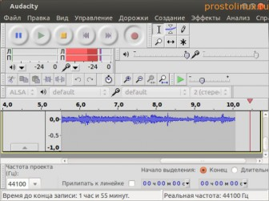

Как записать звук в Linux?
Для этой цели в Linux есть замечательная программа - Audacity. Установить её можно одной командой:
sudo apt-get install audacity
После установки идём в меню Приложения - Аудио и видео - Audacity и запускаем программу:

Как видите программа имеет хороший интерфейс, на первый взгляд даже не очень простой, но пользоваться программой очень просто. В верху мы видим несколько кнопок, как у обычного магнитофона. Нажимаем на красную кнопку - запись звука пошла, нажимаем стоп - останавливаем запись. Включаем воспроизведение и слушаем запись. Что может быть проще?
Но эта программа не простой диктофон, так как она умеет не только записывать звук, но и его обрабатывать: создавать эффекты, анализировать, убирать шумы, обрезать аудио файлы и многое другое.
Теперь вы знаете, как можно записать звук в Linux. Пользуйтесь на здоровье!